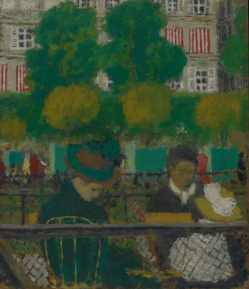
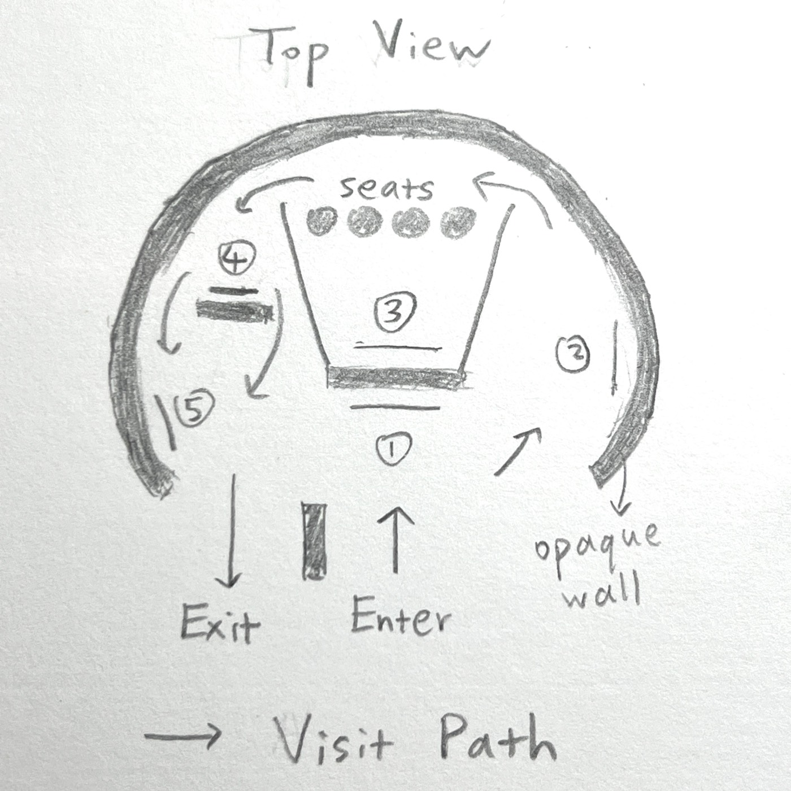

Writings寫作

The Contrasts and Patterns in The Tuileries Gardens, Paris
Arbitrarily Unconscious This is a critical writing on an imagined modern art curatorial.
The Contrasts and Patterns in The Tuileries Gardens, Paris
Arbitrarily Unconscious This is a critical writing on an imagined modern art curatorial.